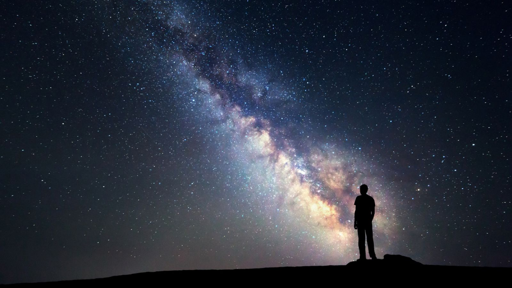

7.-Observando el Universo

El cielo nocturno tiene algo de fascinante que nos atrapa. Mirar las estrellas, conocer los astros, comprender qué ocurre allá fuera… Son cuestiones que han cautivado al ser humano desde el principio de los tiempos. Algo estupendo en verano, cuando podemos alargar las noches mirando a través de la ventana porque al día siguiente no hay que madrugar para ir al colegio.
Stellarium es un programa que permite simular un planetario virtual, es software libre y está disponible para los principales sistemas operativos. Permite calcular la posición del Sol, la Luna, planetas, constelaciones y estrellas, además simula el cielo dependiendo de la localización y tiempo del observador. También simula fenómenos astronómicos, tales como lluvias de meteoros y eclipses lunares y solares. (Fuente:Wikipedia).